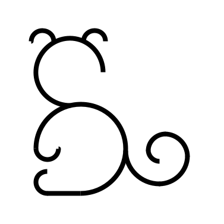

SIMIO

SIMIO: Connecting SIMulatIons to Observations
The SIMIO package contains a suite of functions and wrappers for CASA 5.6.2, designed to take your radiative transfer image, for example from RADMC-3D, and return how your system would have looked if ALMA had observed it. The package aims to answer the question: How would my system look if an existing observation had targeted it?
The package
Difference with simobserve and simanalyze
The CASA tasks generate synthetic observations based on antenna configuration inputs, total exposure time, observation time, selected bandwidth, and other information needed to create the synthetic visibilities.
SIMIO, on the other hand, takes existing ALMA observations and replaces their data with your synthetic image. Therefore, you automatically have the same uv-coverage, frequency coverage, bandwidth, exposure time, and all the properties of the actual observation. This is useful when you need to test whether existing observations could have detected the features of your simulations.
With SIMIO, you do not need to worry about the observational details since the default parameters already mimic the chosen observation. All the imaging parameters and routines are set to state-of-the-art knowledge. Just input your simulation and get all the products.
Compare directly to any ALMA observation
SIMIO has several templates that you can use for your synthetic observation, and you can also add templates by yourself. Each template contains an actual observation of a protoplanetary disk and information about the source. By default, SIMIO will take your observation and simulate it as if it had the same geometry and distance as the template. Both the geometry and the distance to the source can be modified.
You can also disable the source geometry and input your radiative transfer image with the desired geometry.
Better than Gaussian convolution, and as easy to run
Gaussian convolution is just one of the steps of generating an image with CLEAN. The SIMIO package will give you all the necessary data products to analyze your simulations::
- Measurement Set, or ms file.
- Images in FITS format: beam-convolved image, PSF, model, and residuals.
- Additional data figures comparing your source to the template.
Example
This is how the Solar System from Bergez-Casalou et al. (2022) would look if it was at the same distance and geometry as HD 163296, TW Hya, MY Lup, or LkHa 330.

The Solar System from Bergez-Casalou et al. (2022) if it was at the same distance and geometry of PDS 70, using the observations of Benisty et al. (2021). The dots show the locations of PDS 70 b, PDS 70 c, and the disk center.
Resources
Acknowledgements
This work was possible thanks to the support of my Ph.D. advisor, Paola Pinilla. The original routines to extract and replace visibilities in measurement sets were written by Laura Pérez and later modified to fit into SIMIO. The JvM correction routine is original from the MAPS collaboration. I also thank the ALMA helpdesk staff, especially Jackie Bertone, who helped fix the measurement set of TW Hya to create its template.
I acknowledge the support provided by the Alexander von Humboldt Foundation in the framework of the Sofja Kovalevskaja Award endowed by the Federal Ministry of Education and Research.
Are you having issues creating a template?
Send me a message. Some measurement sets can be a bit challenging, but we will sort it out.